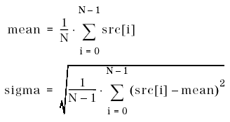

DSP_MEAN
This API computes the mean and standard deviation (usually denoted as SIGMA) for the specified elements in a specified array.
This API computes the following statistical quantities of src:

where N is size .
This API is defined in the header file /opt/hp93000/soc/prod_com/include/MAPI/libdsp.h.
Syntax
DSP_MEAN(ARRAY_I& src, DOUBLE *mean,
DOUBLE *sigma);
DSP_MEAN(INT *src, DOUBLE *mean, DOUBLE *sigma,
INT size);
DSP_MEAN(ARRAY_D& src, DOUBLE *mean,
DOUBLE *sigma);
DSP_MEAN(DOUBLE *src, DOUBLE *mean,
DOUBLE *sigma, INT size);I/O |
Parameter |
Description / Range |
|---|---|---|
I |
src |
Source array |
O |
mean |
Mean within source array |
O |
sigma |
Standard deviation within source array |
I |
size |
Number of elements to be processed 2 ≤ size ≤ 2097152 size ≤ (size of src) |
Example
ARRAY_D array1; double mean, sigma; . . DSP_MEAN(array1, &mean, &sigma, 60);
DSP_MEAN computes the mean and standard deviation (SIGMA) for the first 60 elements in array1 . The results are returned to the mean and sigma .